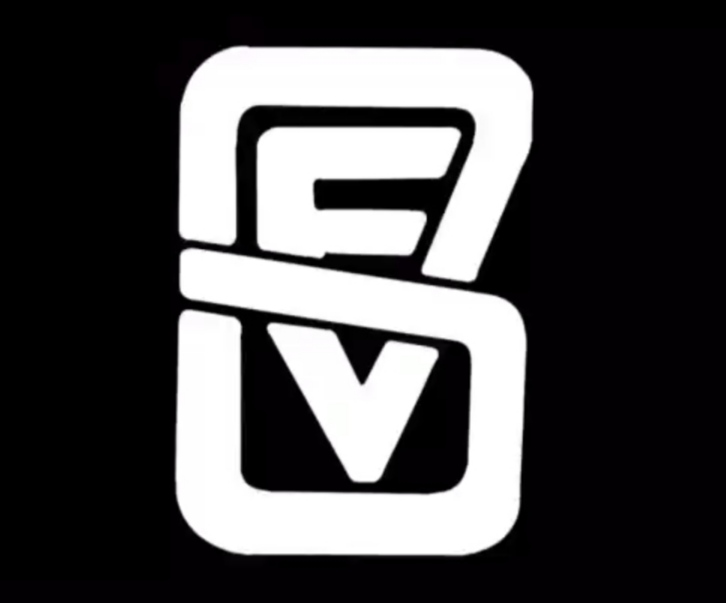
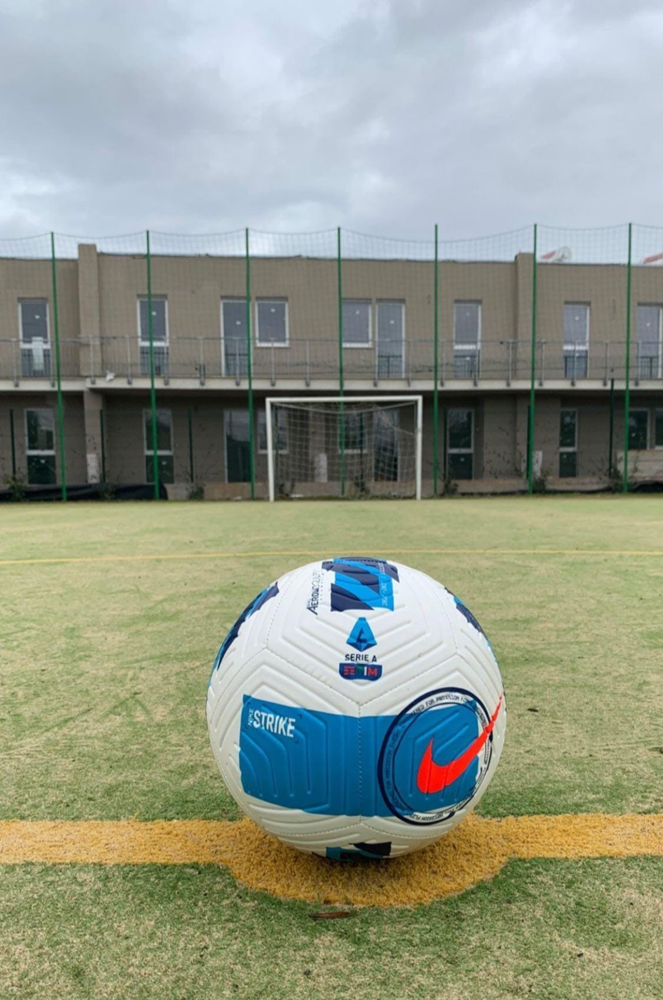

FC Vallerano
Sede: Roma
Fondazione: 2020
Colori Ufficiali: Nero e Verde
Composizione Societaria
- Presidente: Lorenzo Sulpizii
- Vice Presidente: Alessio Amatori
- CEO: Samuele Zolarsi
- Direttore Sportivo: Giancarlo De Marzo
- Responsabile Stampa: Simone Strani

Giocatori Chiave
- Antonio Maria di Giulio
- Leonardo Cappellani
- Giuseppe Pirozzi
- Giulio Toletti
Sponsorships
- Bar de Cenci
- Gype Sport
- Parrucchiere Zolarsi